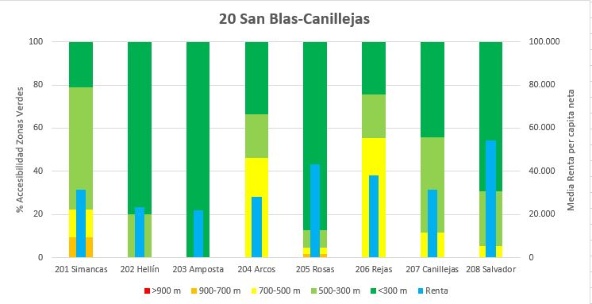

<!DOCTYPE html>
<html lang="es"> 
	<head> 
		<meta charset="UTF-8"/>
		<title>Accesibilidad a Zonas Verdes</title>
		<link rel="stylesheet" href="https://unpkg.com/leaflet@1.4.0/dist/leaflet.css"
		integrity="sha512-puBpdR0798OZvTTbP4A8Ix/l+A4dHDD0DGqYW6RQ+9jxkRFclaxxQb/SJAWZfWAkuyeQUytO7+7N4QKrDh+drA=="
		crossorigin=""/>
		<script src="https://unpkg.com/leaflet@1.4.0/dist/leaflet.js"
			integrity="sha512-QVftwZFqvtRNi0ZyCtsznlKSWOStnDORoefr1enyq5mVL4tmKB3S/EnC3rRJcxCPavG10IcrVGSmPh6Qw5lwrg=="
			crossorigin="">
		</script>
		<script type="text/javascript" src="barrios.js"></script>
		<script type="text/javascript" src="zonasverdes.js"></script>
		<script type="text/javascript" src="secciones.js"></script>
		<script type="text/javascript" src="bici.js"></script>
		<script type="text/javascript" src="barriomad.js"></script>
		
		<style> 
			body {
			padding: 0;
			margin: 0;
			}
			html, body, #map {
			height: 100%;
			}
			.info {
			padding: 6px 8px;
			font: 14px/16px Arial, Helvetica, sans-serif;
			background: white;
			background: rgba(255,255,255,0.8);
			box-shadow: 0 0 15px rgba(0,0,0,0.2);
			border-radius: 5px;
			}
			.info h2 {
			margin: 0 0 5px;
			font-family: Helvetica;
			color: green;
			}
			Estilo1{
				font-size: 18px;
				font-family: Helvetica;
				color: green;
			}
			
			Estilo2{
				font-size: 12px;
				font-family: Helvetica;
				color: black;
			}
			.legend {
				line-height: 18px;
				color: #555;
			} 
			.legend I {
				width: 18px;
				height: 18px;
				float: left;
				margin-right: 8px;
				opacity: 0.7;
			}	 
			


		</style> 
		<script src="js/leaflet-providers.js"></script>
		<script src="Leaflet.MakiMarkers.js"></script>

		
		
		<!-- Leaflet Plugins -->
		<link rel="stylesheet" href="Control.MiniMap.css"/>
		<script src="Control.MiniMap.js"></script>
		<link rel="stylesheet" href="L.Control.MousePosition.css" />
		<script src="L.Control.MousePosition.js"></script>
		<link rel="stylesheet" href="Control.FullScreen.css" />
		<script src="Control.FullScreen.js"></script>
		<link rel="stylesheet" href="leaflet.groupedlayercontrol.css" />
		<script src="leaflet.groupedlayercontrol.js"></script>
		<link rel="stylesheet" href="https://maxcdn.bootstrapcdn.com/font-awesome/4.7.0/css/font-awesome.min.css">
		<link rel="stylesheet" href="https://cdn.jsdelivr.net/npm/leaflet.locatecontrol@[VERSION]/dist/L.Control.Locate.min.css" />
		<script src="https://cdn.jsdelivr.net/npm/leaflet.locatecontrol@[VERSION]/dist/L.Control.Locate.min.js" charset="utf-8"></script>
		<link rel="stylesheet" href="https://cdn.jsdelivr.net/gh/opencagedata/leaflet-opencage-search@d4cbd36122efc8d17152b4177ed0e12165305441/dist/css/L.Control.OpenCageData.Search.min.css" />
		<script src="https://cdn.jsdelivr.net/gh/opencagedata/leaflet-opencage-search@d4cbd36122efc8d17152b4177ed0e12165305441/dist/js/L.Control.OpenCageSearch.min.js"></script>

	</head>  
	<body>
		<div id ="map"> </div> 
		<script type="text/javascript">
				
		var osm = L.tileLayer('https://server.arcgisonline.com/ArcGIS/rest/services/World_Street_Map/MapServer/tile/{z}/{y}/{x}', {
				attribution: 'Tiles &copy; Esri &mdash; Source: Esri, DeLorme, NAVTEQ, USGS, Intermap, iPC, NRCAN, Esri Japan, METI, Esri China (Hong Kong), Esri (Thailand), TomTom, 2012',
				zoom: 11,
				dragging: false,
				id: 'mapbox.streets',
				accessToken: 'pk.eyJ1IjoiamF2aWVyZ3A5IiwiYSI6ImNqc20xdDl3NzAwZmQzeWxmMzVta3BsNHgifQ.-ZG7a1yX6mXsd7nU4piEuw'
		});
		var map = L.map('map', {
			center: [40.4355000, -3.6725600],
			zoom: 11.5,
			layers: osm,
			zoomControl:false,
			fullscreenControl: true
		});
		
		var Esri_WorldImagery = L.tileLayer('https://server.arcgisonline.com/ArcGIS/rest/services/World_Imagery/MapServer/tile/{z}/{y}/{x}', {
		attribution: 'Tiles &copy; Esri &mdash; Source: Esri, i-cubed, USDA, USGS, AEX, GeoEye, Getmapping, Aerogrid, IGN, IGP, UPR-EGP, and the GIS User Community'
		});
		
		var Esri_WorldStreetMap = L.tileLayer('https://server.arcgisonline.com/ArcGIS/rest/services/World_Street_Map/MapServer/tile/{z}/{y}/{x}', {
		attribution: 'Tiles &copy; Esri &mdash; Source: Esri, DeLorme, NAVTEQ, USGS, Intermap, iPC, NRCAN, Esri Japan, METI, Esri China (Hong Kong), Esri (Thailand), TomTom, 2012'
		});
		
		var title = L.control({ position:'topright'});
			title.onAdd = function (map) {
			var div = L.DomUtil.create('div', 'info');
				div.innerHTML +=
				'<h2>Accesibilidad a Zonas Verdes</h2>';
		return div;
		};
		title.addTo(map);
		
		var options = {
		key: '3c38d15e76c02545181b07d3f8cfccf0', // REPLACE WITH YOUR API-KEY. This key might go away any time!
		limit: 10
		};
		var geocoder = L.Control.OpenCageSearch.geocoder(options);
		var control = L.Control.openCageSearch(options).addTo(map);
		var marker;
		
		new L.Control.Zoom({ position:'topleft'}).addTo(map);
		
		var osm2 = new L.tileLayer('https://server.arcgisonline.com/ArcGIS/rest/services/World_Street_Map/MapServer/tile/{z}/{y}/{x}', {
			attribution: 'Tiles &copy; Esri &mdash; Source: Esri, DeLorme, NAVTEQ, USGS, Intermap, iPC, NRCAN, Esri Japan, METI, Esri China (Hong Kong), Esri (Thailand), TomTom, 2012',
			maxZoom: 13,
			minZoom:0
		});
		
		var barriosStyle = {
		'color': "#1E71E1",
		'weight': 2,
		'opacity': 0.7,
		'fillColor': 1
		};
		
		var zonasStyle = {
		'color': "#568B48",
		'weight': 2,
		'opacity': 1,
		'fillcolor': "#568B48",
		fillopacity: 1
		};
		
		var anilloStyle = {
		'color': "#BD94EE",
		'weight': 1.5,
		'opacity': 1,
		'fillcolor': "#BD94EE",
		fillopacity: 1
		};
		
		function getColor1(d) {
			return d > 4000 ? '#d7191c':
			d < 300 ? '#55C638':
			d < 500 ? '#B4F3A4':
			d < 700 ? '#ffffbf':
			d < 900 ? '#fdae61':
			d < 4000 ? '#d7191c':
			'#8181F';
		} 
		function getColor2(d) {
			return d > 4000 ? '#bd0026':
			d < 60 ? '#ffffb2':
			d < 150 ? '#fecc5c':
			d < 213 ? '#fd8d3c':
			d < 291 ? '#f03b20':
			d < 4000 ? '#bd0026':
			'#8181F';
		} 
		function barriopopStyle(feature) {
			return {
			fillColor: getColor2(feature.properties.DENSIDAD),
			weight: 1,
			opacity: 0.7,
			color: 0,
			fillOpacity: 0.7
		};
		}
		
		function getColor3(d) {
			return d > 400000 ? '#cb181d':
			d < 28000 ? '#fee5d9':
			d < 36000 ? '#fcae91':
			d < 42000 ? '#fb6a4a':
			d < 400000 ? '#cb181d':
			'#8181F';
		} 
		function barriorentaStyle(feature) {
			return {
			fillColor: getColor3(feature.properties.Renta),
			weight: 1,
			opacity: 0.7,
			color: 0,
			fillOpacity: 0.7
		};
		}
		
		function seccionesStyle(feature) {
			return {
			fillColor: getColor1(feature.properties.NEAR),
			weight: 1,
			opacity: 0.7,
			color: 0,
			fillOpacity: 0.7
		};
		}
		
		function barriosnearStyle(feature) {
			return {
			fillColor: getColor1(feature.properties.Near),
			weight: 1,
			opacity: 0.7,
			color: 0,
			fillOpacity: 0.7
		};
		}
		
		function highlightFeature(e) {
		var layer = e.target;

		layer.setStyle({
			weight: 4,
			color: '#666',
			fillOpacity: 0.7
		});

		if (!L.Browser.ie && !L.Browser.opera && !L.Browser.edge) {
			layer.bringToFront();
		}
		info.update(layer.feature.properties);
		}

		function resetHighlight(e) {
		secciones1.resetStyle(e.target);
		info.update();
		}

		function zoomToFeature(e) {
		map.fitBounds(e.target.getBounds());
		}

		function onEachFeature(feature, layer) {
		layer.on({
			mouseover: highlightFeature,
			mouseout: resetHighlight,
			click: zoomToFeature
		});
		}
		var mouse = new L.Control.MousePosition({ position:'bottomleft'}).addTo(map);
		var escala = L.control.scale({ position:'bottomleft'}).addTo(map);
		var info = L.control({ position:'bottomleft'});
		
		info.onAdd = function (map) {
		this._div = L.DomUtil.create('div', 'info');
		this.update();
		return this._div;
		};

		info.update = function (props) {
		this._div.innerHTML = props ?
			'<h3><Estilo1>'+ props.DESBDT_1 + '</Estilo1></h3><h1><Estilo2>Distancia media ZV (m): ' + props.NEAR + '</Estilo2></h1><h1><Estilo2>Tiempo caminando (min): ' + props.TIME + '</Estilo2></h1><h3><Estilo2>Sección: '  + props.DESBDT + '</Estilo2></h3><h3><Estilo2>Distrito: ' + props.DISTRITO + '</Estilo2></h3><h3><Estilo2>Población (hab.): ' + props.Total + '</Estilo2></h3><h3><Estilo2>Renta neta media por hogar (€): ' + props.RENTA_ + '</Estilo2></h3>'
			: '<h2><Estilo2>Navegue por el mapa</Estilo2></h2>';
		};

		info.addTo(map);

		function popup1(feature, layer) {
		if (feature.properties && feature.properties.DESBDT) {
		layer.bindPopup("<ul><Estilo1>"+feature.properties.DESBDT+"</Estilo1> <h3>Renta per capita neta: "+feature.properties.Renta+"€</h3></ul>");
		}
		}
		
		var barriopop = L.geoJson(barriomad, {style: barriopopStyle, onEachFeature: popup2});
		
		function popup2(feature, layer) {
		if (feature.properties && feature.properties.DESBDT) {
		layer.bindPopup("<Estilo1>"+feature.properties.DESBDT+"</Estilo1><h3>Población Total: "+feature.properties.Total+"</h3><h3>- Jóvenes (0-19): "+feature.properties.Por_Young+"%</h3><h3>- Adultos (20-64): "+feature.properties.Por_Adult+"%</h3><h3>- Ancianos (65+): "+feature.properties.Por_Old+"%</h3>");
		}
		}
		
		var barriorenta = L.geoJson(barriomad, {style: barriorentaStyle, onEachFeature: popup1});
		
		function popup3(feature, layer) {
		if (feature.properties && feature.properties.DESBDT) {
		layer.bindPopup("<Estilo1>"+feature.properties.DESBDT+"</Estilo1>");
		}
		}
		
		var barrionear = L.geoJson(barriomad, {style: barriosnearStyle, onEachFeature: popup3});
		
		var secciones1 = L.geoJson(secciones, {style: seccionesStyle, 
			onEachFeature: onEachFeature
		}).addTo(map);
		
		var zonasverdes = L.geoJson(zonasverdes, {style: zonasStyle}).addTo(map);
			
		var barrios = L.geoJson(barrios, {style: barriosStyle}).addTo(map);
		
		var bici = L.geoJson(bici, {style: anilloStyle});
		
		L.MakiMarkers.accessToken = "pk.eyJ1IjoiamF2aWVyZ3A5IiwiYSI6ImNqc20xdDl3NzAwZmQzeWxmMzVta3BsNHgifQ.-ZG7a1yX6mXsd7nU4piEuw";
		
	
		var retiro = L.MakiMarkers.icon({icon: "park", color: "#60BE3A", size:"m"});
		retiro1 = L.marker([40.414813, -3.682784],{icon:retiro}).bindPopup('<Estilo1>Jardines del Buen Retiro</Estilo1><a href="https://www.madrid.es/portal/site/munimadrid/menuitem.0c57021e0d1f6162c345c34571f1a5a0/?vgnextoid=499561945d9ec210VgnVCM2000000c205a0aRCRD&vgnextchannel=1cc66e3b07d4e210VgnVCM1000000b205a0aRCRD&vgnextfmt=default&vgnextlocale=es" target="blank"><h2>Más información</h2></a>');
		
		var juanpablo = L.MakiMarkers.icon({icon: "park", color: "#60BE3A", size:"m"});
		juanpablo1 = L.marker([40.455047, -3.626892],{icon:juanpablo}).bindPopup('<Estilo1>Parque Juan Pablo II</Estilo1><a href="https://www.madrid.es/portal/site/munimadrid/menuitem.0c57021e0d1f6162c345c34571f1a5a0/?vgnextoid=ea452f20e2ebe210VgnVCM2000000c205a0aRCRD&vgnextchannel=1cc66e3b07d4e210VgnVCM1000000b205a0aRCRD&vgnextfmt=default&vgnextlocale=es" target="blank"><h2>Más información</h2></a>');
		
		var lineal = L.MakiMarkers.icon({icon: "park", color: "#60BE3A", size:"m"});
		lineal1 = L.marker([40.376757, -3.686880],{icon:lineal}).bindPopup('<Estilo1>Parque Lineal del Manzanares</Estilo1><a href="https://www.madrid.es/portal/site/munimadrid/menuitem.0c57021e0d1f6162c345c34571f1a5a0/?vgnextoid=a0a4b0cedda9e210VgnVCM1000000b205a0aRCRD&vgnextchannel=1cc66e3b07d4e210VgnVCM1000000b205a0aRCRD&vgnextfmt=default&vgnextlocale=es" target="blank"><h2>Más información</h2></a>');
		
		var rio = L.MakiMarkers.icon({icon: "park", color: "#60BE3A", size:"m"});
		rio1 = L.marker([40.397985, -3.710540],{icon:rio}).bindPopup('<Estilo1>Parque Madrid Río</Estilo1><a href="https://www.madrid.es/portal/site/munimadrid/menuitem.0c57021e0d1f6162c345c34571f1a5a0/?vgnextoid=4fec1d25e5356310VgnVCM2000000c205a0aRCRD&vgnextchannel=1cc66e3b07d4e210VgnVCM1000000b205a0aRCRD&vgnextfmt=default&vgnextlocale=es" target="blank"><h2>Más información</h2></a>');
		
		var berro = L.MakiMarkers.icon({icon: "park", color: "#60BE3A", size:"m"});
		berro1 = L.marker([40.422815, -3.661155],{icon:berro}).bindPopup('<Estilo1>Quinta de la Fuente del Berro</Estilo1><a href="https://www.madrid.es/portal/site/munimadrid/menuitem.0c57021e0d1f6162c345c34571f1a5a0/?vgnextoid=38d83bba7834f210VgnVCM2000000c205a0aRCRD&vgnextchannel=1cc66e3b07d4e210VgnVCM1000000b205a0aRCRD&vgnextfmt=default&vgnextlocale=es" target="blank"><h2>Más información</h2></a>');
		
		var molinos = L.MakiMarkers.icon({icon: "park", color: "#60BE3A", size:"m"});
		molinos1 = L.marker([40.443830, -3.628175],{icon:molinos}).bindPopup('<Estilo1>Parque Quinta de los Molinos</Estilo1><a href="https://www.madrid.es/portal/site/munimadrid/menuitem.0c57021e0d1f6162c345c34571f1a5a0/?vgnextoid=3e0264a7f259e210VgnVCM2000000c205a0aRCRD&vgnextchannel=1cc66e3b07d4e210VgnVCM1000000b205a0aRCRD&vgnextfmt=default&vgnextlocale=es" target="blank"><h2>Más información</h2></a>');
		
		var casacampo = L.MakiMarkers.icon({icon: "park", color: "#60BE3A", size:"m"});
		casacampo1 = L.marker([40.420010, -3.748921],{icon:casacampo}).bindPopup('<Estilo1>Casa de Campo</Estilo1><a href="https://www.madrid.es/portal/site/munimadrid/menuitem.0c57021e0d1f6162c345c34571f1a5a0/?vgnextoid=482a315919a9e210VgnVCM1000000b205a0aRCRD&vgnextchannel=1cc66e3b07d4e210VgnVCM1000000b205a0aRCRD&vgnextfmt=default&vgnextlocale=es" target="blank"><h2>Más información</h2></a>');
		
		var oeste = L.MakiMarkers.icon({icon: "park", color: "#60BE3A", size:"m"});
		oeste1 = L.marker([40.430913, -3.726535],{icon:oeste}).bindPopup('<Estilo1>Parque del Oeste</Estilo1><a href="https://www.madrid.es/portal/site/munimadrid/menuitem.0c57021e0d1f6162c345c34571f1a5a0/?vgnextoid=0a57899a90c7e210VgnVCM2000000c205a0aRCRD&vgnextchannel=1cc66e3b07d4e210VgnVCM1000000b205a0aRCRD&vgnextfmt=default&vgnextlocale=es" target="blank"><h2>Más información</h2></a>');
		
		var dehesa = L.MakiMarkers.icon({icon: "park", color: "#60BE3A", size:"m"});
		dehesa1 = L.marker([40.457414, -3.722408],{icon:dehesa}).bindPopup('<Estilo1>Parque Dehesa de la Villa</Estilo1><a href="https://www.madrid.es/portal/site/munimadrid/menuitem.0c57021e0d1f6162c345c34571f1a5a0/?vgnextoid=c2e013a90fb7e210VgnVCM2000000c205a0aRCRD&vgnextchannel=1cc66e3b07d4e210VgnVCM1000000b205a0aRCRD&vgnextfmt=default&vgnextlocale=es" target="blank"><h2>Más información</h2></a>');
		
		var torrearias = L.MakiMarkers.icon({icon: "park", color: "#60BE3A", size:"m"});
		torrearias1 = L.marker([40.445213, -3.620782],{icon:torrearias}).bindPopup('<Estilo1>Quinta de Torre Arias</Estilo1><a href="https://www.madrid.es/portal/site/munimadrid/menuitem.0c57021e0d1f6162c345c34571f1a5a0/?vgnextoid=84c7277160d88410VgnVCM2000000c205a0aRCRD&vgnextchannel=1cc66e3b07d4e210VgnVCM1000000b205a0aRCRD&vgnextfmt=default&vgnextlocale=es" target="blank"><h2>Más información</h2></a>');
		
		var capricho = L.MakiMarkers.icon({icon: "park", color: "#60BE3A", size:"m"});
		capricho1 = L.marker([40.456153, -3.598876],{icon:capricho}).bindPopup('<Estilo1>Parque El Capricho</Estilo1><a href="https://www.madrid.es/portal/site/munimadrid/menuitem.0c57021e0d1f6162c345c34571f1a5a0/?vgnextoid=9db6fb010e99e210VgnVCM1000000b205a0aRCRD&vgnextchannel=1cc66e3b07d4e210VgnVCM1000000b205a0aRCRD&vgnextfmt=default&vgnextlocale=es" target="blank"><h2>Más información</h2></a>');
		
		var juancarlos = L.MakiMarkers.icon({icon: "park", color: "#60BE3A", size:"m"});
		juancarlos1 = L.marker([40.462457, -3.605387],{icon:juancarlos}).bindPopup('<Estilo1>Parque Juan Carlos I</Estilo1><a href="https://www.madrid.es/portal/site/munimadrid/menuitem.0c57021e0d1f6162c345c34571f1a5a0/?vgnextoid=8d9a78a0dea9e210VgnVCM1000000b205a0aRCRD&vgnextchannel=1cc66e3b07d4e210VgnVCM1000000b205a0aRCRD&vgnextfmt=default&vgnextlocale=es" target="blank"><h2>Más información</h2></a>');
		
		var sabatini = L.MakiMarkers.icon({icon: "park", color: "#60BE3A", size:"m"});
		sabatini1 = L.marker([40.420434, -3.713965],{icon:sabatini}).bindPopup('<Estilo1>Jardines de Sabatini</Estilo1><a href="https://www.madrid.es/portal/site/munimadrid/menuitem.0c57021e0d1f6162c345c34571f1a5a0/?vgnextoid=20baf389ed2ee210VgnVCM1000000b205a0aRCRD&vgnextchannel=1cc66e3b07d4e210VgnVCM1000000b205a0aRCRD&vgnextfmt=default&vgnextlocale=es" target="blank"><h2>Más información</h2></a>');
		
		var felipe = L.MakiMarkers.icon({icon: "park", color: "#60BE3A", size:"m"});
		felipe1 = L.marker([40.490950, -3.632223],{icon:felipe}).bindPopup('<Estilo1>Parque Felipe VI</Estilo1><a href="https://www.madrid.es/portal/site/munimadrid/menuitem.0c57021e0d1f6162c345c34571f1a5a0/?vgnextoid=65eda830bd9eb410VgnVCM2000000c205a0aRCRD&vgnextchannel=38bb1914e7d4e210VgnVCM1000000b205a0aRCRD&vgnextfmt=default&vgnextlocale=es" target="blank"><h2>Más información</h2></a>');
		
		var pradolongo = L.MakiMarkers.icon({icon: "park", color: "#60BE3A", size:"m"});
		pradolongo1 = L.marker([40.375793, -3.707148],{icon:pradolongo}).bindPopup('<Estilo1>Parque de Pradolongo</Estilo1><a href="https://www.madrid.es/portal/site/munimadrid/menuitem.0c57021e0d1f6162c345c34571f1a5a0/?vgnextoid=1a174f963318e210VgnVCM1000000b205a0aRCRD&vgnextchannel=38bb1914e7d4e210VgnVCM1000000b205a0aRCRD&vgnextfmt=default&vgnextlocale=es" target="blank"><h2>Más información</h2></a>');
		
		var roma = L.MakiMarkers.icon({icon: "park", color: "#60BE3A", size:"m"});
		roma1 = L.marker([40.415779, -3.661796],{icon:roma}).bindPopup('<Estilo1>Parque Roma</Estilo1><a href="https://www.madrid.es/portal/site/munimadrid/menuitem.0c57021e0d1f6162c345c34571f1a5a0/?vgnextoid=675e280d37e2e210VgnVCM1000000b205a0aRCRD&vgnextchannel=38bb1914e7d4e210VgnVCM1000000b205a0aRCRD&vgnextfmt=default&vgnextlocale=es" target="blank"><h2>Más información</h2></a>');
		
		var galvan = L.MakiMarkers.icon({icon: "park", color: "#60BE3A", size:"m"});
		galvan1 = L.marker([40.389435, -3.683408],{icon:galvan}).bindPopup('<Estilo1>Parque Enrique Tierno Galván</Estilo1><a href="https://www.madrid.es/portal/site/munimadrid/menuitem.0c57021e0d1f6162c345c34571f1a5a0/?vgnextoid=e09f680e2383e210VgnVCM1000000b205a0aRCRD&vgnextchannel=38bb1914e7d4e210VgnVCM1000000b205a0aRCRD&vgnextfmt=default&vgnextlocale=es" target="blank"><h2>Más información</h2></a>');
		
		var emperatriz = L.MakiMarkers.icon({icon: "park", color: "#60BE3A", size:"m"});
		emperatriz1 = L.marker([40.378797, -3.723171],{icon:emperatriz}).bindPopup('<Estilo1>Parque Emperatriz María de Austria</Estilo1><a href="https://www.madrid.es/portal/site/munimadrid/menuitem.0c57021e0d1f6162c345c34571f1a5a0/?vgnextoid=57fc4fc4583be210VgnVCM1000000b205a0aRCRD&vgnextchannel=38bb1914e7d4e210VgnVCM1000000b205a0aRCRD&vgnextfmt=default&vgnextlocale=es" target="blank"><h2>Más información</h2></a>');
		
		var isidro = L.MakiMarkers.icon({icon: "park", color: "#60BE3A", size:"m"});
		isidro1 = L.marker([40.397978, -3.728394],{icon:isidro}).bindPopup('<Estilo1>Parque de San Isidro</Estilo1><a href="https://www.madrid.es/portal/site/munimadrid/menuitem.0c57021e0d1f6162c345c34571f1a5a0/?vgnextoid=8c420bef1b2ae210VgnVCM1000000b205a0aRCRD&vgnextchannel=38bb1914e7d4e210VgnVCM1000000b205a0aRCRD&vgnextfmt=default&vgnextlocale=es" target="blank"><h2>Más información</h2></a>');
		
		var berlin = L.MakiMarkers.icon({icon: "park", color: "#60BE3A", size:"m"});
		berlin1 = L.marker([40.450438, -3.675744],{icon:berlin}).bindPopup('<Estilo1>Parque de Berlín</Estilo1><a href="https://www.madrid.es/portal/site/munimadrid/menuitem.0c57021e0d1f6162c345c34571f1a5a0/?vgnextoid=d2e70e165684e210VgnVCM1000000b205a0aRCRD&vgnextchannel=38bb1914e7d4e210VgnVCM1000000b205a0aRCRD&vgnextfmt=default&vgnextlocale=es" target="blank"><h2>Más información</h2></a>');
		
		var calero = L.MakiMarkers.icon({icon: "park", color: "#60BE3A", size:"m"});
		calero1 = L.marker([40.435638, -3.651914],{icon:calero}).bindPopup('<Estilo1>Parque el Calero</Estilo1><a href="https://www.madrid.es/portal/site/munimadrid/menuitem.0c57021e0d1f6162c345c34571f1a5a0/?vgnextoid=ba9545b9b59be210VgnVCM2000000c205a0aRCRD&vgnextchannel=38bb1914e7d4e210VgnVCM1000000b205a0aRCRD&vgnextfmt=default&vgnextlocale=es" target="blank"><h2>Más información</h2></a>');
		
		var norte = L.MakiMarkers.icon({icon: "park", color: "#60BE3A", size:"m"});
		norte1 = L.marker([40.480496, -3.696219],{icon:norte}).bindPopup('<Estilo1>Parque Norte</Estilo1><a href="https://www.madrid.es/portal/site/munimadrid/menuitem.0c57021e0d1f6162c345c34571f1a5a0/?vgnextoid=10d3ed24a83ce210VgnVCM1000000b205a0aRCRD&vgnextchannel=38bb1914e7d4e210VgnVCM1000000b205a0aRCRD&vgnextfmt=default&vgnextlocale=es" target="blank"><h2>Más información</h2></a>');
		
		var alcazaba = L.MakiMarkers.icon({icon: "park", color: "#60BE3A", size:"m"});
		alcazaba1 = L.marker([40.475130, -3.706868],{icon:alcazaba}).bindPopup('<Estilo1>Parque de la Alcazaba</Estilo1><a href="https://www.madrid.es/portal/site/munimadrid/menuitem.0c57021e0d1f6162c345c34571f1a5a0/?vgnextoid=625c80aeae3ce210VgnVCM1000000b205a0aRCRD&vgnextchannel=38bb1914e7d4e210VgnVCM1000000b205a0aRCRD&vgnextfmt=default&vgnextlocale=es" target="blank"><h2>Más información</h2></a>');
		
		var arroyo = L.MakiMarkers.icon({icon: "park", color: "#60BE3A", size:"m"});
		arroyo1 = L.marker([40.493757, -3.719289],{icon:arroyo}).bindPopup('<Estilo1>Parque Arroyo Fresno</Estilo1><a href="https://www.madrid.es/portal/site/munimadrid/menuitem.0c57021e0d1f6162c345c34571f1a5a0/?vgnextoid=915fc8c5494be210VgnVCM2000000c205a0aRCRD&vgnextchannel=38bb1914e7d4e210VgnVCM1000000b205a0aRCRD&vgnextfmt=default&vgnextlocale=es" target="blank"><h2>Más información</h2></a>');
		
		var villarosa = L.MakiMarkers.icon({icon: "park", color: "#60BE3A", size:"m"});
		villarosa1 = L.marker([40.468087, -3.629787],{icon:villarosa}).bindPopup('<Estilo1>Parque de Villa Rosa</Estilo1><a href="https://www.madrid.es/portal/site/munimadrid/menuitem.0c57021e0d1f6162c345c34571f1a5a0/?vgnextoid=66d84eb3b28de210VgnVCM1000000b205a0aRCRD&vgnextchannel=38bb1914e7d4e210VgnVCM1000000b205a0aRCRD&vgnextfmt=default&vgnextlocale=es" target="blank"><h2>Más información</h2></a>');
		
		var aluche = L.MakiMarkers.icon({icon: "park", color: "#60BE3A", size:"m"});
		aluche1 = L.marker([40.392205, -3.759222],{icon:aluche}).bindPopup('<Estilo1>Parque Aluche</Estilo1><a href="https://www.madrid.es/portal/site/munimadrid/menuitem.0c57021e0d1f6162c345c34571f1a5a0/?vgnextoid=c5b4abb9e009e210VgnVCM1000000b205a0aRCRD&vgnextchannel=38bb1914e7d4e210VgnVCM1000000b205a0aRCRD&vgnextfmt=default&vgnextlocale=es" target="blank"><h2>Más información</h2></a>');
		
		var cruces = L.MakiMarkers.icon({icon: "park", color: "#60BE3A", size:"m"});
		cruces1 = L.marker([40.376973, -3.758910],{icon:cruces}).bindPopup('<Estilo1>Parque de las Cruces</Estilo1><a href="https://www.madrid.es/portal/site/munimadrid/menuitem.0c57021e0d1f6162c345c34571f1a5a0/?vgnextoid=37a5716cd5a7d210VgnVCM1000000b205a0aRCRD&vgnextchannel=38bb1914e7d4e210VgnVCM1000000b205a0aRCRD&vgnextfmt=default&vgnextlocale=es" target="blank"><h2>Más información</h2></a>');
		
		var almodovar = L.MakiMarkers.icon({icon: "park", color: "#60BE3A", size:"m"});
		almodovar1 = L.marker([40.393536, -3.747609],{icon:almodovar}).bindPopup('<Estilo1>Parque Cerro Almodóvar</Estilo1><a href="https://www.madrid.es/portal/site/munimadrid/menuitem.0c57021e0d1f6162c345c34571f1a5a0/?vgnextoid=0568fda02908e210VgnVCM1000000b205a0aRCRD&vgnextchannel=38bb1914e7d4e210VgnVCM1000000b205a0aRCRD&vgnextfmt=default&vgnextlocale=es" target="blank"><h2>Más información</h2></a>');
		
		var pozuelo = L.MakiMarkers.icon({icon: "park", color: "#60BE3A", size:"m"});
		pozuelo1 = L.marker([40.453207, -3.777889],{icon:pozuelo}).bindPopup('<Estilo1>Parque Arroyo Pozuelo</Estilo1><a href="https://www.madrid.es/portal/site/munimadrid/menuitem.0c57021e0d1f6162c345c34571f1a5a0/?vgnextoid=c097f9e8ecf33610VgnVCM2000001f4a900aRCRD&vgnextchannel=38bb1914e7d4e210VgnVCM1000000b205a0aRCRD&vgnextfmt=default&vgnextlocale=es" target="blank"><h2>Más información</h2></a>');
		
		var bombilla = L.MakiMarkers.icon({icon: "park", color: "#60BE3A", size:"m"});
		bombilla1 = L.marker([40.430167, -3.729159],{icon:bombilla}).bindPopup('<Estilo1>Parque de la Bombilla</Estilo1><a href="https://www.madrid.es/portal/site/munimadrid/menuitem.0c57021e0d1f6162c345c34571f1a5a0/?vgnextoid=542b896bd24be210VgnVCM2000000c205a0aRCRD&vgnextchannel=38bb1914e7d4e210VgnVCM1000000b205a0aRCRD&vgnextfmt=default&vgnextlocale=es" target="blank"><h2>Más información</h2></a>');
		
		var moratalaz = L.MakiMarkers.icon({icon: "park", color: "#60BE3A", size:"m"});
		moratalaz1 = L.marker([40.409657, -3.644694],{icon:moratalaz}).bindPopup('<Estilo1>Parque de Moratalaz</Estilo1><a href="https://www.madrid.es/portal/site/munimadrid/menuitem.0c57021e0d1f6162c345c34571f1a5a0/?vgnextoid=f6719706b5f8e210VgnVCM2000000c205a0aRCRD&vgnextchannel=38bb1914e7d4e210VgnVCM1000000b205a0aRCRD&vgnextfmt=default&vgnextlocale=es" target="blank"><h2>Más información</h2></a>');
		
		var tiopio = L.MakiMarkers.icon({icon: "park", color: "#60BE3A", size:"m"});
		tiopio1 = L.marker([40.396742, -3.656046],{icon:tiopio}).bindPopup('<Estilo1>Parque Cerro del Tío Pío</Estilo1><a href="https://www.madrid.es/portal/site/munimadrid/menuitem.0c57021e0d1f6162c345c34571f1a5a0/?vgnextoid=956bf5edd607e210VgnVCM1000000b205a0aRCRD&vgnextchannel=38bb1914e7d4e210VgnVCM1000000b205a0aRCRD&vgnextfmt=default&vgnextlocale=es" target="blank"><h2>Más información</h2></a>');
		
		var entrevias = L.MakiMarkers.icon({icon: "park", color: "#60BE3A", size:"m"});
		entrevias1 = L.marker([40.370380, -3.669834],{icon:entrevias}).bindPopup('<Estilo1>Parque Forestal de Entrevías</Estilo1><a href="https://www.madrid.es/portal/site/munimadrid/menuitem.0c57021e0d1f6162c345c34571f1a5a0/?vgnextoid=5be77fb92217e210VgnVCM1000000b205a0aRCRD&vgnextchannel=38bb1914e7d4e210VgnVCM1000000b205a0aRCRD&vgnextfmt=default&vgnextlocale=es" target="blank"><h2>Más información</h2></a>');
		
		var palomeras = L.MakiMarkers.icon({icon: "park", color: "#60BE3A", size:"m"});
		palomeras1 = L.marker([40.385991, -3.636108],{icon:palomeras}).bindPopup('<Estilo1>Parque Lineal de Palomeras</Estilo1><a href="https://www.madrid.es/portal/site/munimadrid/menuitem.0c57021e0d1f6162c345c34571f1a5a0/?vgnextoid=d757e2fa26c6e210VgnVCM2000000c205a0aRCRD&vgnextchannel=38bb1914e7d4e210VgnVCM1000000b205a0aRCRD&vgnextfmt=default&vgnextlocale=es" target="blank"><h2>Más información</h2></a>');
		
		var paraiso = L.MakiMarkers.icon({icon: "park", color: "#60BE3A", size:"m"});
		paraiso1 = L.marker([40.430822, -3.621152],{icon:paraiso}).bindPopup('<Estilo1>Parque El Paraíso</Estilo1><a href="https://www.madrid.es/portal/site/munimadrid/menuitem.0c57021e0d1f6162c345c34571f1a5a0/?vgnextoid=9967511f3649e210VgnVCM2000000c205a0aRCRD&vgnextchannel=38bb1914e7d4e210VgnVCM1000000b205a0aRCRD&vgnextfmt=default&vgnextlocale=es" target="blank"><h2>Más información</h2></a>');
		
		var avenidas = L.MakiMarkers.icon({icon: "park", color: "#60BE3A", size:"m"});
		avenidas1 = L.marker([40.441480, -3.660456],{icon:avenidas}).bindPopup('<Estilo1>Parque de las Avenidas</Estilo1><a href="https://www.madrid.es/portal/site/munimadrid/menuitem.0c57021e0d1f6162c345c34571f1a5a0/?vgnextoid=08ad1b44f82ee210VgnVCM1000000b205a0aRCRD&vgnextchannel=38bb1914e7d4e210VgnVCM1000000b205a0aRCRD&vgnextfmt=default&vgnextlocale=es" target="blank"><h2>Más información</h2></a>');
		
		var cuña = L.MakiMarkers.icon({icon: "park", color: "#60BE3A", size:"m"});
		cuña1 = L.marker([40.400484, -3.740622],{icon:cuña}).bindPopup('<Estilo1>Parque Cuña Verde de Latina</Estilo1><a href="https://www.madrid.es/portal/site/munimadrid/menuitem.0c57021e0d1f6162c345c34571f1a5a0/?vgnextoid=66732baf6409e210VgnVCM1000000b205a0aRCRD&vgnextchannel=38bb1914e7d4e210VgnVCM1000000b205a0aRCRD&vgnextfmt=default&vgnextlocale=es" target="blank"><h2>Más información</h2></a>');
		
		var ventilla = L.MakiMarkers.icon({icon: "park", color: "#60BE3A", size:"m"});
		ventilla1 = L.marker([40.474144, -3.695692],{icon:ventilla}).bindPopup('<Estilo1>Parque de la Ventilla</Estilo1><a href="https://www.madrid.es/portal/site/munimadrid/menuitem.0c57021e0d1f6162c345c34571f1a5a0/?vgnextoid=579dad627a83e210VgnVCM1000000b205a0aRCRD&vgnextchannel=38bb1914e7d4e210VgnVCM1000000b205a0aRCRD&vgnextfmt=default&vgnextlocale=es" target="blank"><h2>Más información</h2></a>');
		
		var sagahun = L.MakiMarkers.icon({icon: "park", color: "#60BE3A", size:"m"});
		sagahun1 = L.marker([40.470256, -3.708325],{icon:sagahun}).bindPopup('<Estilo1>Parque Agustín Rodríguez Sagahún</Estilo1><a href="https://www.madrid.es/portal/site/munimadrid/menuitem.0c57021e0d1f6162c345c34571f1a5a0/?vgnextoid=a7a655b6e783e210VgnVCM1000000b205a0aRCRD&vgnextchannel=38bb1914e7d4e210VgnVCM1000000b205a0aRCRD&vgnextfmt=default&vgnextlocale=es" target="blank"><h2>Más información</h2></a>');
		
		var olof = L.MakiMarkers.icon({icon: "park", color: "#60BE3A", size:"m"});
		olof1 = L.marker([40.383951, -3.712677],{icon:olof}).bindPopup('<Estilo1>Parque Olof Palme</Estilo1><a href="https://www.madrid.es/portal/site/munimadrid/menuitem.0c57021e0d1f6162c345c34571f1a5a0/?vgnextoid=5af9053c8718e210VgnVCM1000000b205a0aRCRD&vgnextchannel=38bb1914e7d4e210VgnVCM1000000b205a0aRCRD&vgnextfmt=default&vgnextlocale=es" target="blank"><h2>Más información</h2></a>');
		
		var valdebernardo = L.MakiMarkers.icon({icon: "park", color: "#60BE3A", size:"m"});
		valdebernardo1 = L.marker([40.398680, -3.613221],{icon:valdebernardo}).bindPopup('<Estilo1>Parque de Valdebernardo</Estilo1><a href="https://www.madrid.es/portal/site/munimadrid/menuitem.0c57021e0d1f6162c345c34571f1a5a0/?vgnextoid=ef74c9728e99e210VgnVCM1000000b205a0aRCRD&vgnextchannel=38bb1914e7d4e210VgnVCM1000000b205a0aRCRD&vgnextfmt=default&vgnextlocale=es" target="blank"><h2>Más información</h2></a>');
		
		var gavia = L.MakiMarkers.icon({icon: "park", color: "#60BE3A", size:"m"});
		gavia1 = L.marker([40.365853, -3.627350],{icon:gavia}).bindPopup('<Estilo1>Parque de la Gavia</Estilo1><a href="https://www.madrid.es/portal/site/munimadrid/menuitem.0c57021e0d1f6162c345c34571f1a5a0/?vgnextoid=48a88d736701a410VgnVCM1000000b205a0aRCRD&vgnextchannel=38bb1914e7d4e210VgnVCM1000000b205a0aRCRD&vgnextfmt=default&vgnextlocale=es" target="blank"><h2>Más información</h2></a>');
		
		var boyal = L.MakiMarkers.icon({icon: "park", color: "#60BE3A", size:"m"});
		boyal1 = L.marker([40.346174, -3.688135],{icon:boyal}).bindPopup('<Estilo1>Parque Dehesa Boyal</Estilo1><a href="https://www.madrid.es/portal/site/munimadrid/menuitem.0c57021e0d1f6162c345c34571f1a5a0/?vgnextoid=bc1a24622fa7e210VgnVCM2000000c205a0aRCRD&vgnextchannel=38bb1914e7d4e210VgnVCM1000000b205a0aRCRD&vgnextfmt=default&vgnextlocale=es" target="blank"><h2>Más información</h2></a>');
		
		var plata = L.MakiMarkers.icon({icon: "park", color: "#60BE3A", size:"m"});
		plata1 = L.marker([40.347652, -3.719132],{icon:plata}).bindPopup('<Estilo1>Parque de Plata y Castañar</Estilo1><a href="https://www.madrid.es/portal/site/munimadrid/menuitem.0c57021e0d1f6162c345c34571f1a5a0/?vgnextoid=31138e29b547e210VgnVCM2000000c205a0aRCRD&vgnextchannel=38bb1914e7d4e210VgnVCM1000000b205a0aRCRD&vgnextfmt=default&vgnextlocale=es" target="blank"><h2>Más información</h2></a>');
		
		var odonel = L.MakiMarkers.icon({icon: "park", color: "#60BE3A", size:"m"});
		odonel1 = L.marker([40.413146, -3.639759],{icon:odonel}).bindPopup('<Estilo1>Parque Cuña Verde de O´Donnell</Estilo1><a href="https://www.madrid.es/portal/site/munimadrid/menuitem.0c57021e0d1f6162c345c34571f1a5a0/?vgnextoid=8c86e2704a07e210VgnVCM1000000b205a0aRCRD&vgnextchannel=38bb1914e7d4e210VgnVCM1000000b205a0aRCRD&vgnextfmt=default&vgnextlocale=es" target="blank"><h2>Más información</h2></a>');
		
		var elipa = L.MakiMarkers.icon({icon: "park", color: "#60BE3A", size:"m"});
		elipa1 = L.marker([40.419445, -3.654666],{icon:elipa}).bindPopup('<Estilo1>Parque de la Elipa</Estilo1><a href="https://www.madrid.es/portal/site/munimadrid/menuitem.0c57021e0d1f6162c345c34571f1a5a0/?vgnextoid=dd872e3d07cbe210VgnVCM2000000c205a0aRCRD&vgnextchannel=38bb1914e7d4e210VgnVCM1000000b205a0aRCRD&vgnextfmt=default&vgnextlocale=es" target="blank"><h2>Más información</h2></a>');
		
		
		var parques = L.layerGroup([retiro1, juanpablo1, lineal1, rio1, berro1, molinos1, casacampo1, oeste1, dehesa1, torrearias1, capricho1, juancarlos1, sabatini1, felipe1, pradolongo1, roma1, galvan1, 
		emperatriz1, isidro1, berlin1, calero1, norte1, alcazaba1, arroyo1, villarosa1, aluche1, cruces1, almodovar1, pozuelo1, bombilla1, moratalaz1, tiopio1, entrevias1, palomeras1, paraiso1, 
		avenidas1, cuña1, ventilla1, sagahun1, olof1, valdebernardo1, gavia1, boyal1, plata1, odonel1, elipa1]).addTo(map);
		
		var centro = L.MakiMarkers.icon({icon: "marker", color: "#FF3355", size:"m"});
		centro1 = L.marker([40.416848, -3.703495],{icon:centro}).bindPopup('');
		
		var arganzuela = L.MakiMarkers.icon({icon: "marker", color: "#FF3355", size:"m"});
		arganzuela1 = L.marker([40.401050, -3.699242],{icon:arganzuela}).bindPopup('');
		
		var retiro_ = L.MakiMarkers.icon({icon: "marker", color: "#FF3355", size:"m"});
		retiro_1 = L.marker([40.411469, -3.669770],{icon:retiro_}).bindPopup('');
		
		var salamanca = L.MakiMarkers.icon({icon: "marker", color: "#FF3355", size:"m"});
		salamanca1 = L.marker([40.428679, -3.675573],{icon:salamanca}).bindPopup('');
		
		var chamartin = L.MakiMarkers.icon({icon: "marker", color: "#FF3355", size:"m"});
		chamartin1 = L.marker([40.458711, -3.676889],{icon:chamartin}).bindPopup('');
		
		var tetuan = L.MakiMarkers.icon({icon: "marker", color: "#FF3355", size:"m"});
		tetuan1 = L.marker([40.460536, -3.698451],{icon:tetuan}).bindPopup('');
		
		var chamberi = L.MakiMarkers.icon({icon: "marker", color: "#FF3355", size:"m"});
		chamberi1 = L.marker([40.438723, -3.704217],{icon:chamberi}).bindPopup('');
		
		var fuencarral = L.MakiMarkers.icon({icon: "marker", color: "#FF3355", size:"m"});
		fuencarral1 = L.marker([40.497002, -3.726042],{icon:fuencarral}).bindPopup('');
		
		var moncloa = L.MakiMarkers.icon({icon: "marker", color: "#FF3355", size:"m"});
		moncloa1 = L.marker([40.449013, -3.742996],{icon:moncloa}).bindPopup('');
		
		var latina = L.MakiMarkers.icon({icon: "marker", color: "#FF3355", size:"m"});
		latina1 = L.marker([40.390279, -3.767460],{icon:latina}).bindPopup('');
		
		var carabanchel = L.MakiMarkers.icon({icon: "marker", color: "#FF3355", size:"m"});
		carabanchel1 = L.marker([40.382204, -3.736166],{icon:carabanchel}).bindPopup('');
		
		var usera = L.MakiMarkers.icon({icon: "marker", color: "#FF3355", size:"m"});
		usera1 = L.marker([40.378449, -3.699173],{icon:usera}).bindPopup('');
		
		var puente = L.MakiMarkers.icon({icon: "marker", color: "#FF3355", size:"m"});
		puente1 = L.marker([40.388067, -3.657095],{icon:puente}).bindPopup('');
		
		var moratalaz_ = L.MakiMarkers.icon({icon: "marker", color: "#FF3355", size:"m"});
		moratalaz_1 = L.marker([40.406634, -3.642195],{icon:moratalaz_}).bindPopup('');
		
		var ciudad = L.MakiMarkers.icon({icon: "marker", color: "#FF3355", size:"m"});
		ciudad1 = L.marker([40.443770, -3.652001],{icon:ciudad}).bindPopup('');
		
		var hortaleza = L.MakiMarkers.icon({icon: "marker", color: "#FF3355", size:"m"});
		hortaleza1 = L.marker([40.473696, -3.645089],{icon:hortaleza}).bindPopup('');
		
		var villaverde = L.MakiMarkers.icon({icon: "marker", color: "#FF3355", size:"m"});
		villaverde1 = L.marker([40.347459, -3.698238],{icon:villaverde}).bindPopup('');
		
		var villaverde = L.MakiMarkers.icon({icon: "marker", color: "#FF3355", size:"m"});
		villaverde1 = L.marker([40.347459, -3.698238],{icon:villaverde}).bindPopup('');
		
		var villa = L.MakiMarkers.icon({icon: "marker", color: "#FF3355", size:"m"});
		villa1 = L.marker([40.361516, -3.613388],{icon:villa}).bindPopup('');
		
		var vicalvaro = L.MakiMarkers.icon({icon: "marker", color: "#FF3355", size:"m"});
		vicalvaro1 = L.marker([40.396755, -3.594081],{icon:vicalvaro}).bindPopup('');
		
		var sanblas = L.MakiMarkers.icon({icon: "marker", color: "#FF3355", size:"m"});
		sanblas1 = L.marker([40.434741, -3.612391],{icon:sanblas}).bindPopup('');
		
		var barajas = L.MakiMarkers.icon({icon: "marker", color: "#FF3355", size:"m"});
		barajas1 = L.marker([40.468202, -3.581540],{icon:barajas}).bindPopup('');
		
		var datos = L.layerGroup([centro1, arganzuela1, retiro_1, salamanca1, chamartin1, tetuan1, chamberi1, fuencarral1, moncloa1, latina1, carabanchel1, usera1, puente1, moratalaz_1, ciudad1, hortaleza1, villaverde1, villa1, vicalvaro1, sanblas1, barajas1]).addTo(map);
		
		
		var miniMap = new L.Control.MiniMap(osm2, { toggleDisplay: true }).addTo(map);
		
		var peatones = L.tileLayer.wms("http://localhost:8080/geoserver/topp/wms", {
			service: 'WMS',
			version: '1.1.0',
			layers: 'topp:Distancia_costes_calles2',
			srs: 'EPSG:25830',
			format: 'image/png',
			transparent: true,
			opacity: 1,
		});
		
		var bicis = L.tileLayer.wms("http://localhost:8080/geoserver/topp/wms", {
			service: 'WMS',
			version: '1.1.0',
			layers: 'topp:Distancia_costes_bici1',
			srs: 'EPSG:25830',
			format: 'image/png',
			transparent: true,
			opacity: 1,
		});
	
		
			
		var baselayers = {
			"World StreetMap": osm,
			"Ortoimagen": Esri_WorldImagery						
		};
		
		var groupedOverlays = {
		"secciones": {
        "Secciones censales": secciones1,
        "Zonas Verdes PGOUM97": zonasverdes
		},
		"Barrios": {
        "Barrios límites": barrios,
		"Accesibilidad a ZV por barrios": barrionear,
        "Densidad de población": barriopop,
		"Renta per capita neta": barriorenta
		},
		"Marcadores": {
        "Parques de Madrid": parques,
		"Datos resumen Distritos": datos
		},
		};
		
		L.control.groupedLayers(baselayers, groupedOverlays).addTo(map);
		
		var legend1 = L.control({position: 'topleft'});
		legend1.onAdd = function (map) {
		var div = L.DomUtil.create('div', 'info legend'),
			grades = [0, 300, 500, 700, 900],
			labels = [];
		
		div.innerHTML += '<b>Distancia media ZV (m)</b><br>'
		
		for (var i = 0; i < grades.length; i++) {
			div.innerHTML += 
			'<i style="background:' + getColor1(grades[i] + 1) + '"></i> ' +
			grades[i] + (grades[i + 1] ? '&ndash;' + grades[i + 1] + '<br>' : '+')
		}
		return div;
		};legend1.addTo(map);
		
		var legend2 = L.control({position: 'topleft'});
		legend2.onAdd = function (map) {
		var div = L.DomUtil.create('div', 'info legend'),
			grades = [0, 60, 150, 213, 291],
			labels = [];
		
		div.innerHTML += '<b>Densidad de población (hab/Ha)</b><br>'
		
		for (var i = 0; i < grades.length; i++) {
			div.innerHTML += 
			'<i style="background:' + getColor2(grades[i] + 1) + '"></i> ' +
			grades[i] + (grades[i + 1] ? '&ndash;' + grades[i + 1] + '<br>' : '+')
		}
		return div;
		};
		
		var legend3 = L.control({position: 'topleft'});
		legend3.onAdd = function (map) {
		var div = L.DomUtil.create('div', 'info legend'),
			grades = [0, 28000, 36000, 42000],
			labels = [];
		
		div.innerHTML += '<b>Renta per capita neta media (€)</b><br>'
		
		for (var i = 0; i < grades.length; i++) {
			div.innerHTML += 
			'<i style="background:' + getColor3(grades[i] + 1) + '"></i> ' +
			grades[i] + (grades[i + 1] ? '&ndash;' + grades[i + 1] + '<br>' : '+')
		}
		return div;
		};
		
		map.on('overlayadd', function(eventLayer) {
		if (eventLayer.name == 'Densidad de población') {
        legend2.addTo(this);
		} else if (eventLayer.name == 'Renta per capita neta') {
        legend3.addTo(this);
		} 
		});

		map.on('overlayremove', function(eventLayer) {
		if (eventLayer.name == 'Densidad de población') {
        map.removeControl(legend2);
		} else if (eventLayer.name == 'Renta per capita neta') {
        map.removeControl(legend3);
		}     
		});
		
		</script>
	</body> 
</html>